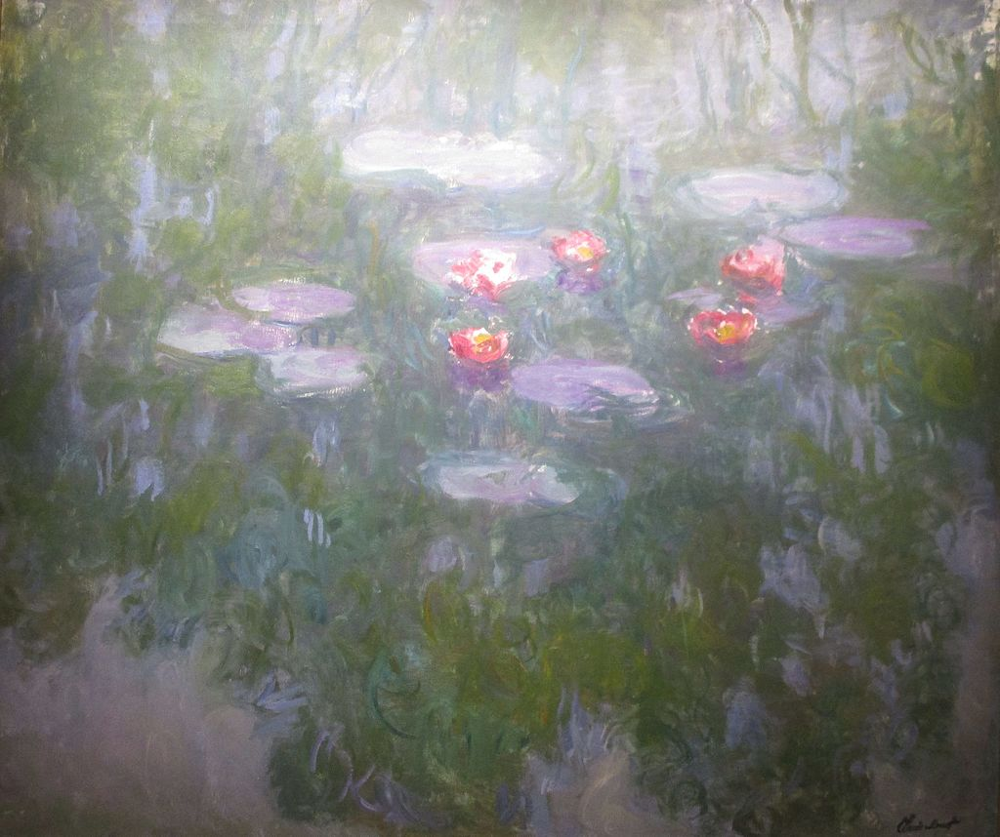

<head>
<meta charset="UTF-8" />
<meta name="keywords" content="drawing, painting" />
<meta name="description" content="drawings by Sunjy" />
<title>Sunjy</title>
<link rel="shortcut icon" type="image/x-icon" href="../../mImages/mCommon/favicon.ico" media="screen" />
<link rel="stylesheet" type="text/css" href="../../mCsses/mCommon/mCssA.css" />
<link rel="stylesheet" type="text/css" href="../../mCsses/mCommon/mCssB.css" />
<link rel="stylesheet" type="text/css" href="../../mCsses/mCommon/mCssC.css" />
<link rel="stylesheet" type="text/css" href="../../mCsses/mCommon/mCssD.css" />
<link rel="stylesheet" type="text/css" href="../../mCsses/mContent/mCssA.css" />
<link rel="stylesheet" type="text/css" href="../../mCsses/mContent/mCssB.css" />
<link rel="stylesheet" type="text/css" href="../../mCsses/mContent/mCssC.css" />
<link rel="stylesheet" type="text/css" href="../../mCsses/mContent/mCssD.css" />
</head>
<script type="text/javascript" src="../../mScripts/mContent/mContentAA.js" /></script>
<script type="text/javascript" src="../../mScripts/mContent/mContentAB.js" /></script>
<script type="text/javascript" src="../../mScripts/mContent/mContentAC.js" /></script>
<script type="text/javascript" src="../../mScripts/mContent/mContentAD.js" /></script>
<script type="text/javascript"></script> 
<script type="text/javascript">
document.write('<div class="mImgAbsolute"></div>');
/*
document.write('<p class="mFontSizeBColor" />From a white paper...</p>');
document.write('<table class="center"><tr><td>');
document.write('');
document.write('</td></tr></table>');
*/
</script>


<script type="text/javascript">
document.write('<p class="mFontSizeBColor" />Water Lilies (1915)</p>');
document.write('<p class="mFontSizeSColor" />Water Lilies by Claude Monet. Monet worked on easel tables of different formats. Square, round and rectangular in which he captured the mirror of the water under different lighting effects.<br><br>To accentuate the effect, he removes all references of the boundaries of the pond. In the mirror of the water, we can see weeping willows, flowers, and plants all perceived reflections with the dynamic clouds in the sky.<br><br>Giverny sits on the “right bank” of the River Seine, where the river Epte meets the Seine. The village lies 80 km (50 mi) from Paris. It is famous as the location of Claude Monet’s garden and home.<br></p>');
document.write('<table class="center" /><tr><td>');
document.write('<br>To accentuate the effect, he removes all references of the boundaries of the pond. In the mirror of the water, we can see weeping willows, flowers, and plants all perceived reflections with the dynamic clouds in the sky.<br><br>Giverny sits on the “right bank” of the River Seine, where the river Epte meets the Seine. The village lies 80 km (50 mi) from Paris. It is famous as the location of Claude Monet’s garden and home.<br>" />');
document.write('</td></tr></table>');
</script>


